1. Configuration
To run CARET correctly, you must configure the assistant by completing a series of required parameters in the Eclipse Preferences window. This includes configuring: LLM agents for task classification and processing, the MongoDB connection, task context and validation cycles, the P2 repository, and the Git user for traceability records
Select a subsection below to view its full documentation:
1.1. Agents
Caret allows users to configure the execution order of agents responsible for classifying and processing tasks. These agents do not necessarily have to use the same technology. Additionally, you can configure the agent sequence for code completion (Content Assistant).
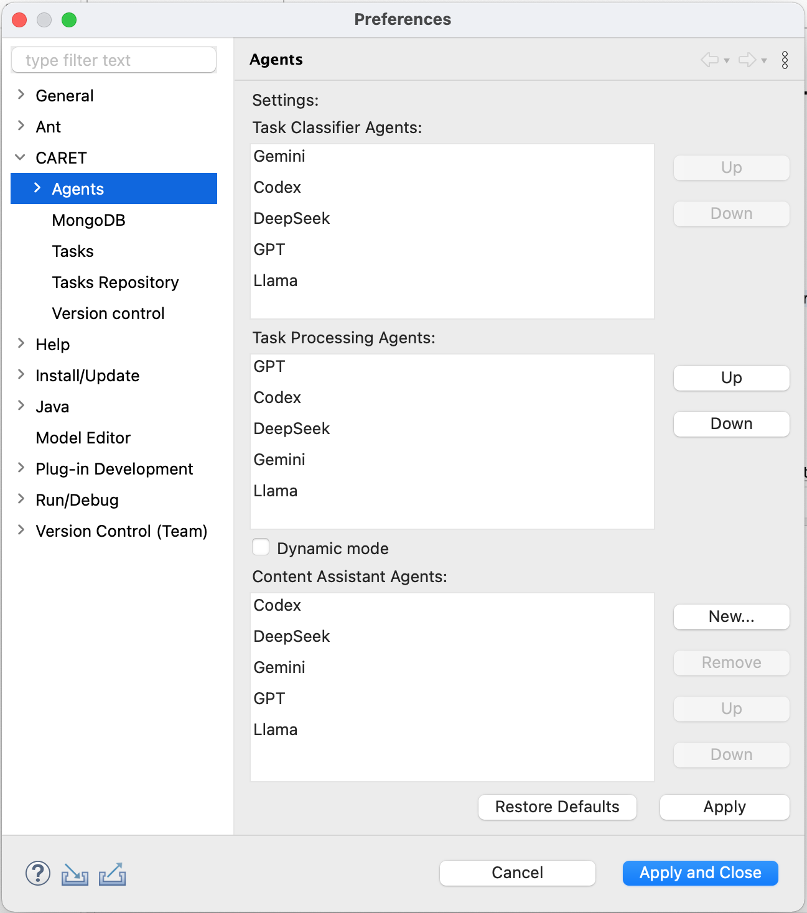
For each LLM agent, the user must configure the API Key, the API URL, and the Model.
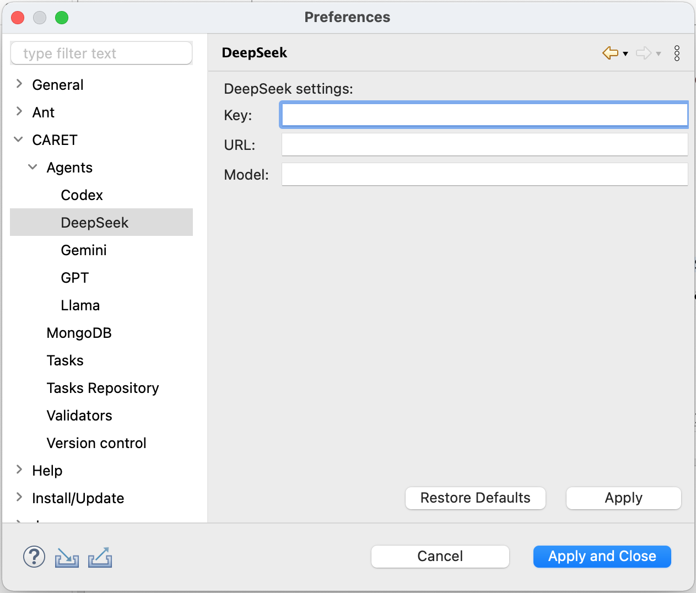
1.2. Database
Configure MongoDB access by entering the Connection String and the Database Name. This database stores the assistant's usage traceability model and the newly defined task plugins.
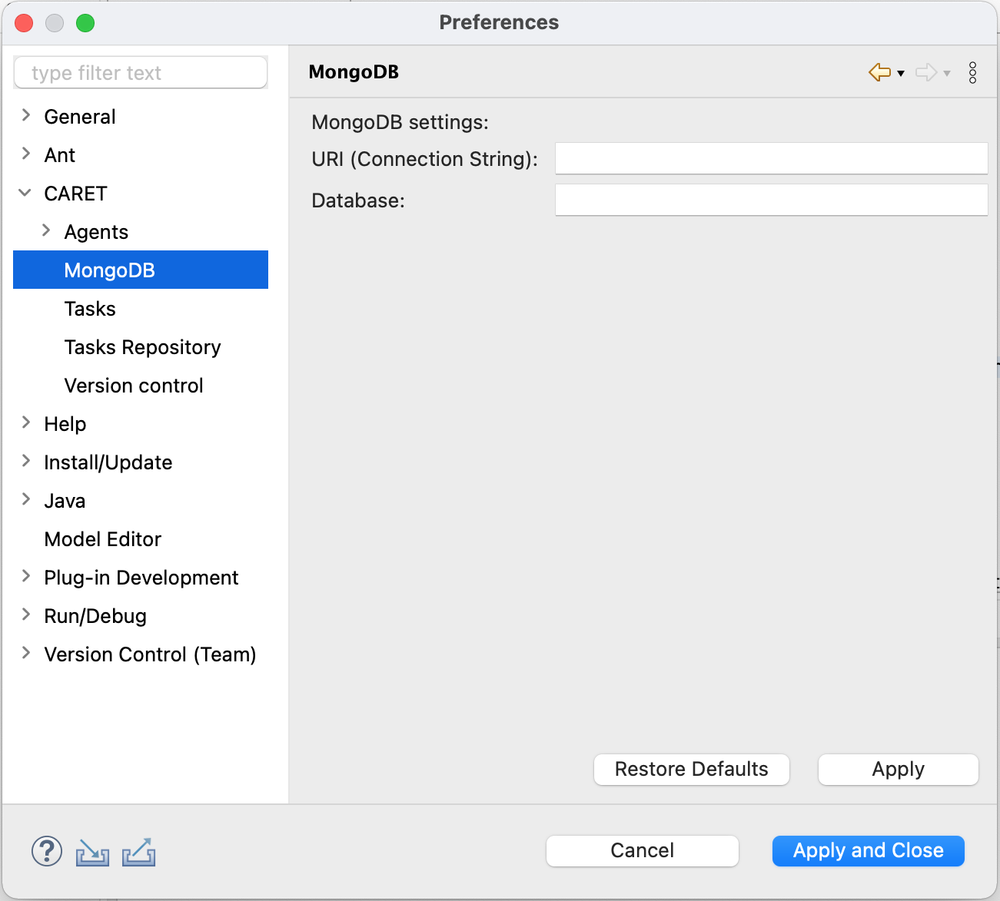
1.3. Tasks
Users can configure tasks by defining the number of pre-validation and post-validation cycles, as well as the context information to be sent with each request for a specific task.
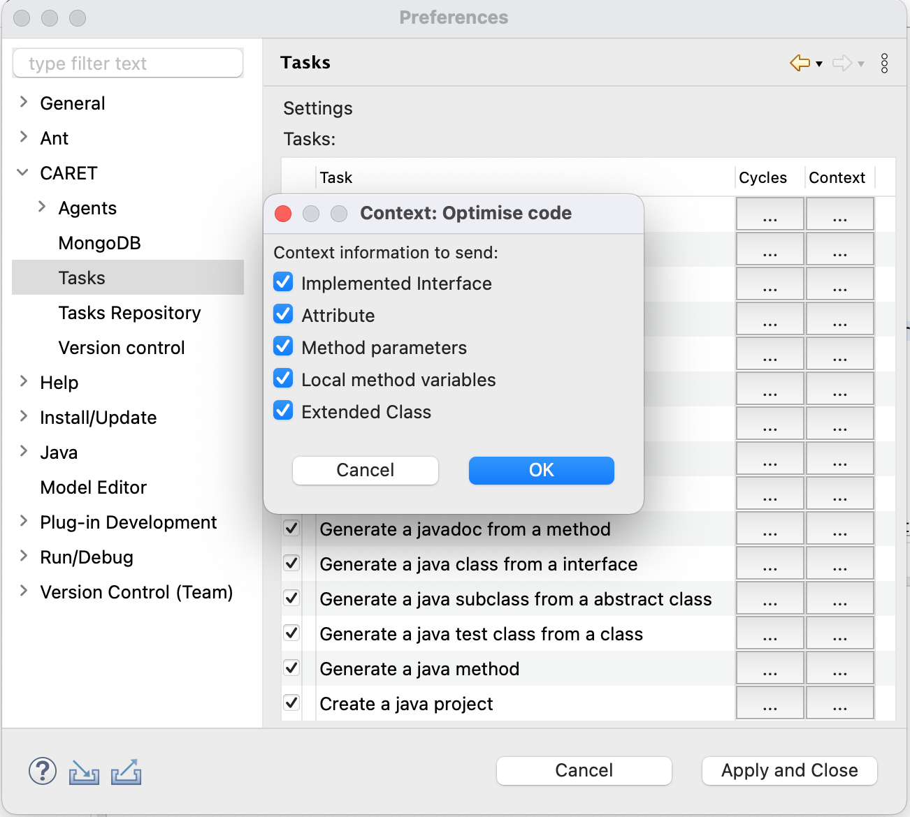
1.4. Task Repository
Newly defined tasks can be shared for install via a Task P2 Repository. To configure access, the user must enter the Repository URL. Optionally, a bearer token can be added if one has already been defined on the plugin server.
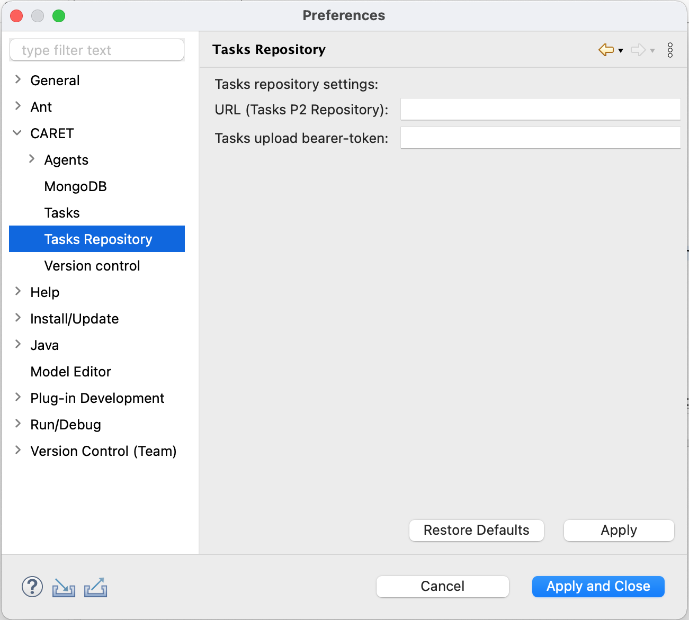
1.5. Version Control
Caret automatically detects the current Git user and completes the Git User and Git Email fields. The user can manually edit these fields if he wishes to use different credentials for traceability records.
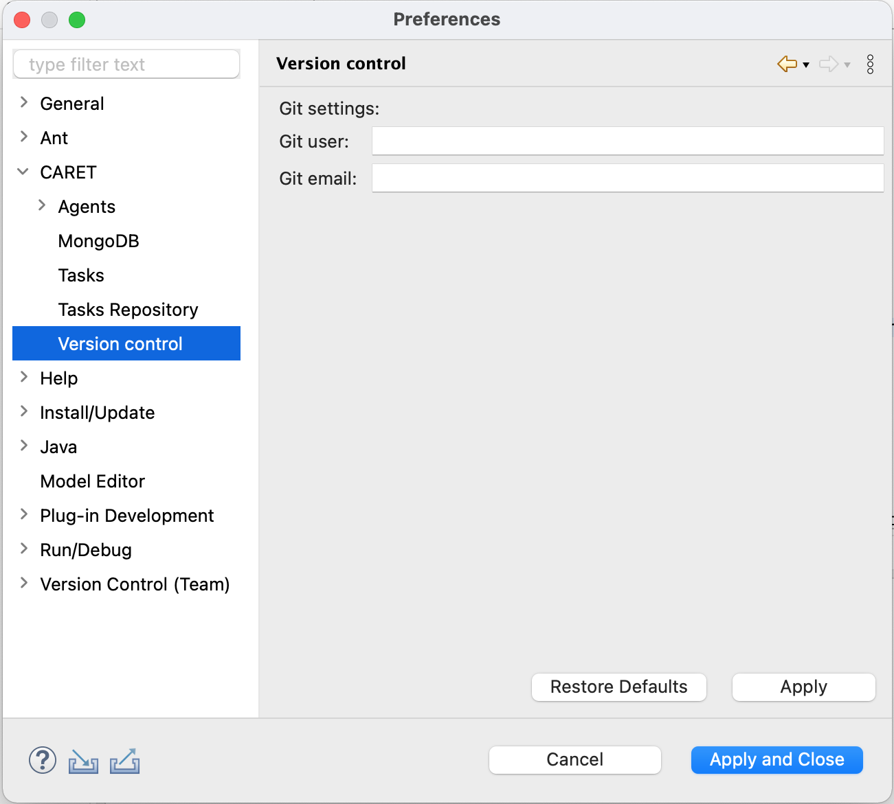
2. Assistance Tasks
Users can extend and manage the CARET features offered by defining new custom tasks using the Eclipse extensions UI. Moreover, users can share those plugins by uploading them to a P2 repository, and the team developers can install available tasks.
Select a subsection below to view its full documentation:
2.1. Task Definition
Caret utilizes the TaskGroup extension point to add new tasks. Users can easily define one or multiple tasks using the standard Eclipse extension UI.
The following mandatory information must be defined:
- Code, Name, Description, Bind type.
- Pre-validations and Post-validations (if applicable)
Optional fields include the commandId and any additional instructions to be appended to the task description. Furthermore, the user must define the necessary parameters, the context to be sent, and the action to be deployed.
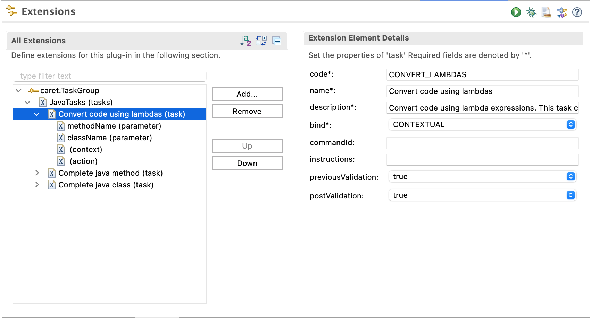
2.2. Task Sharing
Users can sharing created tasks by right-clicking and selecting CARET -> Create Feature and Update Site Projects. Next, the user can upload the task plugin to the previously configured Task Repository by right-clicking and selecting CARET -> Upload Task to Repository.
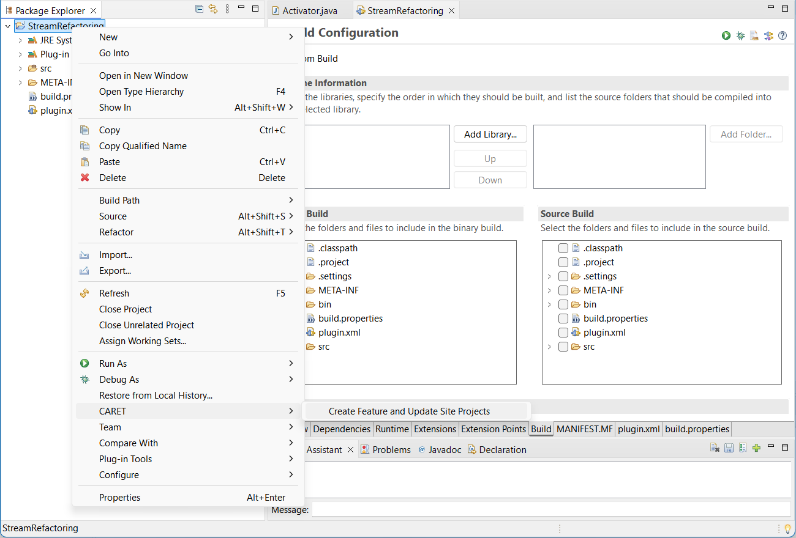
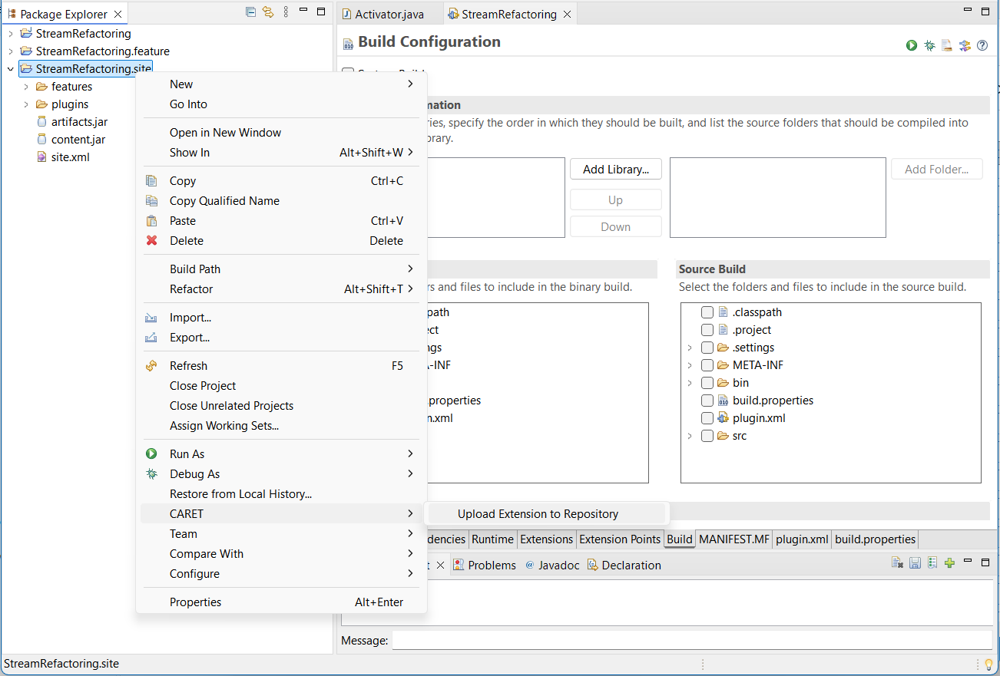
2.3. Task Installation
To install a task from the tasks repository, the user must click on the "Add Task" icon located in the chat window toolbar. Next, the assistant displays a list of available tasks, which can be installed by clicking the "Install" button.
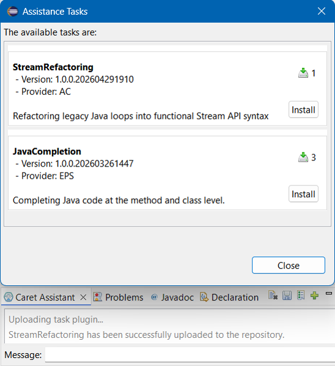
3. Usage
Caret allows users to request a task through defined commands (tasks) in the contextual menu, which can be accessed by right-clicking on the Eclipse code editor or the Package Explorer.
Additionally, the user can request a task through the text field in the chat window.
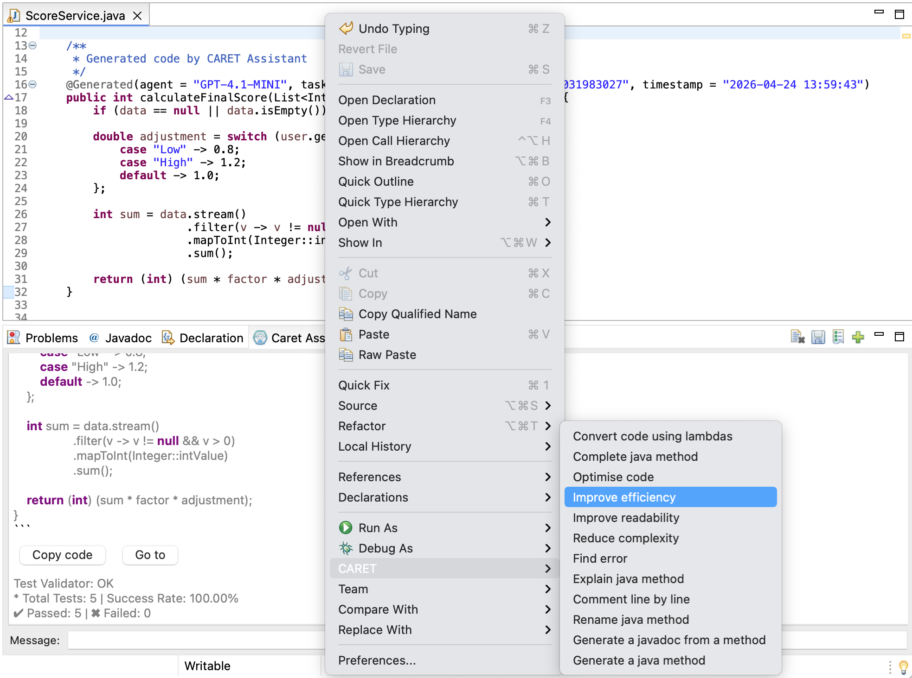
4. Statistics
Users can open the assistant's statistics windows, which shows information on Caret usage traceability data grouped into different views:
- View by Task: Groups the project elements that used a specific task.
- View by Agent: Shows the LLM agents used in the project and the required tasks.
- View by Project: Shows the project’s package structure displaying classes and methods used by the support tasks.
- View by Coverage: Shows tasks coverage rate per unit of use (class or method) relative to the entire project.
- View by User: Groups task usage by user.
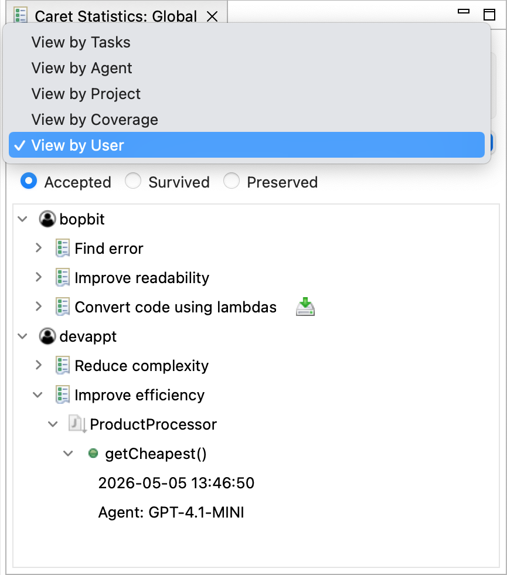
The statistical views displays the following metrics obtained from the traceability information:
- Task acceptance rate: It is the ratio of accepted suggestions to the total number of task requested.
- Task survival rate: The rate of accepted suggestions that have not been deleted and are still active.
- Task preservation rate: The rate of accepted suggestions that are still active but have been modified.
- Task coverage: It is the ratio of the number of units (level of task granularity) that utilised the assistant for a given task to the total number of such units in the project.
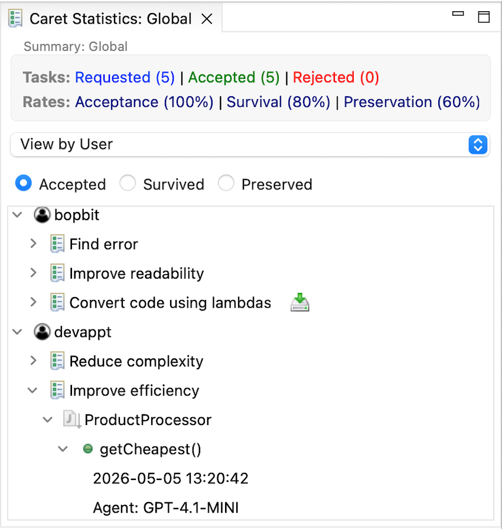
5. Task P2 Repository
To install the P2 repository (download server code), you must first store the requirements.txt and main.py files in a folder on your server. In the terminal, navigate to the folder location and execute the commands to install and run the server
Select a subsection below to view its full documentation:
5.1. Dependency Installation
Create a Python virtual environment to install all necessary dependencies, which include the FastAPI server and its required libraries.
# Create the virtual environment python -m venv .venv # Activate the environment # On macOS/Linux: source .venv/bin/activate # On Windows: .venv\Scripts\activate # Install dependencies pip install -r requirements.txt
5.2. Execution of the server
Once the environment is ready and the libraries are installed, run the main.py file. Executing this file will start the FastAPI server and initialize the application.
python main.py